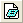

Notizfenster
NoteWindow-Names
Öffnen eines neuen Notizfensters
- Klicken Sie auf die Schaltfläche Neue Notizen  auf der Standardsymbolleiste.
oder
- Wählen Sie im Menü Datei: Neu: Notizen.
Bedienelemente für Notizfenster
Das Hauptmenü Notizen
Wenn Sie ein neues Notizfenster erstellen, werden Notizen zum Hauptmenü hinzugefügt.
- Beispiele laden: Die Standardbeispiele, einschließlich HTML- und MarkDown-Dateien, werden geladen.
- Laden: Andere Dateien werden geladen.
-
Links hinzufügen: Fügen Sie Diagramme und Arbeitsblätter, Zellenwerte, Tabellen, Matrizen, Zeichenketten und Variablen in das aktive Notizfenster ein.
- Im Fall von Text, HTML und MarkDown können Sie Arbeitszellen, Infovariablen, Arbeitsblätter, Diagramm/Bild, Schaltfläche und Kombinationsfelder im Menü hinzufügen. Lesen Sie die Syntax der Links.
- Im Fall von Origin Rich Text wird nur das Hinzufügen von Arbeitsblattzellen, Infovariablen und Diagramm/Bild im Menü unterstützt.
- In Webseite exportieren: Das aktuelle Notizfenster als Webdatei, z. B. eine HTML-Datei, exportieren. Dieses Element ist nur verfügbar, wenn der Rendermodus eingeschaltet ist.
- Rendermodus: Die Syntaxen Origin Rich Text / HTML / MarkDown werden gerendert, um die Informationen im aktuellen Notizfenster in unterschiedlichen Formaten zu zeigen.
-
Platzhalter bearbeiten: Die Platzhalter werden in der HTML-/MarkDown-Quelle bearbeitet.
- Wählen Sie Platzhalter bearbeiten, um das Arbeitsblatt HTML# zu öffnen. Sie können dann diese Platzhalter bearbeiten und den Link in der Zelle kopieren und einfügen, um die Werte einzufügen, die bei Änderungen der Quelle aktualisiert werden.
-
Syntax: Die Syntax wird gewechselt.
- Sie können nur zwischen Text und Origin Rich Text/ HTML/ MarkDown, aber nicht zwischen Origin Rich Text, HTML und MarkDown wechseln. Um zwischen den drei Optionen Origin Rich Text / HTML / MarkDown zu wechseln, müssen Sie zuerst zu Text zurückkehren.
- Zeilennummer anzeigen: Die Zeilennummer wird im Kopf der Zeile mit dem Inhalt angezeigt.
Das Kontextmenü auf der Titelleiste des Fensters
Klicken Sie mit der rechten Maustaste auf die Titelleiste des Fensters. Sie können sehen, dass mehrere Elemente zum Steuern des Notizfensters zur Verfügung stehen.
- Diagramm/Bild, Arbeitsblattzelle, Infovariablen hinzufügen: Fügen Sie diese Objekte in die Notizen ein.
- In Webseite exportieren: Das aktuelle Notizfenster als Webdatei, z. B. eine HTML-Datei, exportieren. Dieses Element ist nur verfügbar, wenn der Rendermodus eingeschaltet ist.
- Notizen speichern unter: Das aktuelle Notizfenster wird als eine Text-/LabTalk-Skript-/HTML-/MarkDown-Datei gespeichert.
- Drucken: Das aktuelle Notizfenster wird gedruckt.
- Fenster verankern: Das Fenster wird verankert, so dass die Stelle festgelegt ist (nützlich beim Anordnen von Fenstern).
- Verbergen: Das aktuelle Notizfenster wird ausgeblendet. Das ausgeblendete Notizfenster kann wieder aufgerufen werden, indem Sie doppelt auf das ausgegraute Symbol im Projekt Explorer klicken.
- Duplizieren: Das aktuelle Notizfenster wird dupliziert.
- Rendermodus: Die Syntaxen Origin Rich Text / HTML / MarkDown werden gerendert, um die Informationen im aktuellen Notizfenster in unterschiedlichen Formaten zu zeigen.
-
Platzhalter bearbeiten: Die Platzhalter werden in der HTML-/MarkDown-Quelle bearbeitet.
- Wählen Sie Platzhalter bearbeiten, um das Arbeitsblatt HTML# zu öffnen. Sie können dann diese Platzhalter bearbeiten und den Link in der Zelle kopieren und einfügen, um die Werte einzufügen, die bei Änderungen der Quelle aktualisiert werden.
-
Syntax: Die Syntax wird gewechselt.
- Sie können nur zwischen Text und Origin Rich Text/ HTML/ MarkDown, aber nicht zwischen Origin Rich Text, HTML und MarkDown wechseln. Um zwischen den drei Optionen Origin Rich Text / HTML / MarkDown zu wechseln, müssen Sie zuerst zu Text zurückkehren.
- Eigenschaften: Öffnen Sie den Dialog Fenstereigenschaften, um Fenstername, Kommentare und Fenstertitel festzulegen.
Benennen und Beschriften des Notizfensters
- Klicken Sie mit der rechten Maustaste auf die Titelleiste des Fensters und wählen Sie Eigenschaften... Alt-Enter, um den Dialog Fenstereigenschaften aufzurufen.
- Geben Sie Langname, Kurzname und/oder Kommentare ein, um das Notizfenster zu benennen.
- Verwenden Sie die Auswahlliste Fenstertitel, um zu steuern, wie Lang- und Kurzname auf der Titelleiste gezeigt werden.
- Klicken Sie auf OK. Natürlich können Sie zur Registerkarte Info wechseln, um die detaillierten Informationen des aktuellen Notizfensters zu überprüfen.
Schriftart und -größe festlegen
Verwenden Sie die Schriftart und Schriftgröße auf der Symbolleiste Format, um die Schrift und ihre Größe im Notizfenster festzulegen.


- Die Schriftart wird von allen Notizfenster genutzt, so dass eine Änderung der Schriftart in einem Notizfenster auf alle anderen Notizfenster übertragen wird.
- Die Schriftgröße kann nicht in jedem Notizfenster unabhängig gesteuert werden.
- Die Änderung von Schriftart und -größe wird als Standard für alle zukünftigen Notizfenster verwendet. Um den Systemstandard wiederherzustellen, schließen Sie Origin, öffnen die Datei Origin.ini im Anwenderdateiordner und löschen die Zeilen für Schrift und Größe im Abschnitt [Notes]. Speichern Sie Origin.ini und starten Sie Origin neu.
- Verwenden Sie die Strg-Taste und das Mausrad, um in das Notizfenster hinein- und wieder herauszuzoomen.
- Drücken Sie die Tasten Strg + M, um in den Rendermodus des Notizfensters zu wechseln. Im Rendermodus wird die Auswahlliste der Prozentwerte für den Zoom auf der Symbolleiste Standard aktiviert.
Textumbruch aktivieren
- Wählen Sie bei aktivem Notizfenster Ansicht: Zeilenumbruch, um den Textumbruch ein- oder auszuschalten.
- Drücken Sie Alt + Enter, um den Dialog Fenstereigenschaften zu öffnen und die Seitenbreite festzulegen. Drücken Sie dann Strg + M, um die Wirkung des Textumbruchs zu zeigen.
Inhalt der Notizfenster in eine Datei speichern
- Klicken Sie mit der rechten Maustaste auf die Titelleiste des Notizfensters, um Notizen speichern unter auszuwählen; oder aktivieren Sie das Notizfenster, um im Menü Datei: Notizen speichern unter zu wählen.
- Wählen Sie den gewünschten Dateityp aus der Auswahlliste Dateityp, geben Sie einen Dateinamen ein und speichern Sie.
HTML-/MarkDown-Sprache eingeben und rendern
- Öffnen Sie ein neues Notizfenster und geben Sie Ihr HTML-/MarkDown-Skript in das Notizfenster ein.
- Wählen Sie im Menü Notizen: Syntax: HTML/MarkDown oder klicken Sie mit der rechten Maustaste auf die Titelleiste, um im Kontextmenü Syntax: HTML/MarkDown auszuwählen.
- Wählen Sie dann im Menü Notizen: Rendermodus oder klicken Sie mit der rechten Maustaste auf die Titelleiste, um im Kontextmenü Rendermodus auszuwählen oder drücken Sie die Tastenkombination Strg + M, um die Skriptzeilen im aktuellen Fenster zu rendern. Klicken Sie doppelt auf eine Stelle im Arbeitsbereich des Fenster oder drücken Sie Strg + M, um zwischen den bearbeitbaren und nicht bearbeitbaren Zuständen zu wechseln.
|
Hinweis: Standardmäßig befindet sich das Notizfenster im Modus Origin Rich Text. Wenn Sie einige Skriptzeilen in einem neuen Notizfenster eingegeben haben, können Sie die Tastenkombination Strg + M drücken, um das Format und den Inhalt in der Vorschau zu sehen.
Die Systemvariable @NPS wird verwendet, um die Syntax, die Sie bevorzugen, in der Vorschau zu sehen. Mit @NPS = 0 werden die Skriptzeilen in HTML geschrieben und mit @NPS = 1 in der Sprache MarkDown.
|
Inhalt der Notizfenster als Webseite exportieren
- Klicken Sie mit der rechten Maustaste auf die Titelleiste des Fensters und wählen Sie Rendermodus.
- Klicken Sie mit der rechten Maustaste auf die Titelleiste des Fensters und wählen Sie In Webseite exportieren oder wählen Sie Notizen: In Webseite exportieren im Menü.
- Geben Sie einen Dateinamen ein und wählen Sie Speichern.
Hinweise:
- Das Menü In Webseite exportieren ist nur verfügbar, wenn das Notizfenster sich aktuell im Rendermodus befindet.
- Wenn Sie ein Notizfenster als eine HTML-Datei exportieren, werden die notwendigen PNG-Dateien (erzeugt aus Origin-Diagrammen und referenziert im Notizfenster) auch exportiert und in demselben Ordner abgelegt wie die HTML-Datei.
|
Als Blatt in Arbeitsmappe einfügen
Das Notizfenster kann als ein Blatt in eine Arbeitsmappe eingefügt werden.
Klicken Sie mit der rechten Maustaste auf den Reiter einer Arbeitsmappe und wählen Sie Notizen als Blatt hinzufügen.